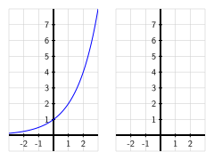
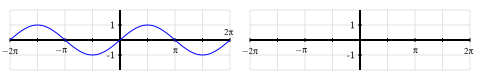

Section2.6Derivatives of the Sine and Cosine Functions
Motivating Questions
What is a graphical justification for why \(\frac{d}{dx}[b^x] = b^x \ln(b)\text{?}\)
What do the graphs of \(y = \sin(x)\) and \(y = \cos(x)\) suggest as formulas for their respective derivatives?
Once we know the derivatives of \(\sin(x)\) and \(\cos(x)\text{,}\) how do previous derivative rules work when these functions are involved?
Throughout Chapter 2, we will develop shortcut derivative rules to help us bypass the limit definition and quickly compute \(f'(x)\) from a formula for \(f(x)\text{.}\) In Section 2.5, we stated the rule for power functions,
\begin{equation*}
\text{if}~ b ~ \text{is a positive real number and}~ f(x) = b^x,~
\text{then}~ f'(x) = b^x \ln(b)\text{.}
\end{equation*}
Later in this section, we will use a graphical argument to conjecture derivative formulas for the sine and cosine functions.
Warm-Up2.6.1.
Consider the function \(g(x) = 2^x\text{,}\) which is graphed in Figure 2.6.1.
At each of \(x = -2, -1, 0, 1, 2\text{,}\) use a straightedge to sketch an accurate tangent line to \(y = g(x)\text{.}\)
Use the provided grid to estimate the slope of the tangent line you drew at each point in (a).
Use the limit definition of the derivative to estimate \(g'(0)\) by using small values of \(h\text{,}\) and compare the result to your visual estimate for the slope of the tangent line to \(y = g(x)\) at \(x = 0\) in (b).
Based on your work in (a), (b), and (c), sketch an accurate graph of \(y = g'(x)\) on the axes adjacent to the graph of \(y = g(x)\text{.}\)
Write at least one sentence that explains why it is reasonable to think that \(g'(x) = cg(x)\text{,}\) where \(c\) is a constant. In addition, calculate \(\ln(2)\text{,}\) and then discuss how this value, combined with your work above, reasonably suggests that \(g'(x) = 2^x \ln(2)\text{.}\)

Figure2.6.1.At left, the graph of \(y = g(x) = 2^x\text{.}\) At right, axes for plotting \(y = g'(x)\text{.}\)
Subsection2.6.1The sine and cosine functions
The sine and cosine functions are among the most important functions in all of mathematics. Sometimes called the circular functions due to their definition on the unit circle (Section 1.6), these periodic functions play a key role in modeling repeating phenomena such as tidal elevations, the behavior of an oscillating mass attached to a spring, or weather patterns. Like polynomial and exponential functions, the sine and cosine functions are considered basic functions, ones that are often used in building more complicated functions. As such, we would like to know formulas for \(\frac{d}{dx} [\sin(x)]\) and \(\frac{d}{dx} [\cos(x)]\text{,}\) and the next two activities lead us to that end.
Activity2.6.2.
Consider the function \(f(x) = \sin(x)\text{,}\) which is graphed in Figure 2.6.2 below. Note carefully that the grid in the diagram does not have boxes that are \(1 \times 1\text{,}\) but rather approximately \(1.57 \times 1\text{,}\) as the horizontal scale of the grid is \(\pi/2\) units per box.

Figure2.6.2.At left, the graph of \(y = f(x) = \sin(x)\text{.}\)
At each of \(x = -2\pi, -\frac{3\pi}{2}, -\pi, -\frac{\pi}{2}, 0, \frac{\pi}{2}, \pi, \frac{3\pi}{2}, 2\pi\text{,}\) use a straightedge to sketch an accurate tangent line to \(y = f(x)\text{.}\)
Use the provided grid to estimate the slope of the tangent line you drew at each point. Pay careful attention to the scale of the grid.
Use the limit definition of the derivative to estimate \(f'(0)\) by using small values of \(h\text{,}\) and compare the result to your visual estimate for the slope of the tangent line to \(y = f(x)\) at \(x = 0\) in (b). Using periodicity, what does this result suggest about \(f'(2\pi)\text{?}\) about \(f'(-2\pi)\text{?}\)
Based on your work in (a), (b), and (c), sketch an accurate graph of \(y = f'(x)\) on the axes adjacent to the graph of \(y = f(x)\text{.}\)
What familiar function do you think is the derivative of \(f(x) = \sin(x)\text{?}\)
Activity2.6.3.
Consider the function \(g(x) = \cos(x)\text{,}\) which is graphed in Figure 2.6.3 below. Note carefully that the grid in the diagram does not have boxes that are \(1 \times 1\text{,}\) but rather approximately \(1.57 \times 1\text{,}\) as the horizontal scale of the grid is \(\pi/2\) units per box.
Figure2.6.3.At left, the graph of \(y = g(x) = \cos(x)\text{.}\)
At each of \(x = -2\pi, -\frac{3\pi}{2}, -\pi, -\frac{\pi}{2}, 0, \frac{\pi}{2}, \pi, \frac{3\pi}{2}, 2\pi\text{,}\) use a straightedge to sketch an accurate tangent line to \(y = g(x)\text{.}\)
Use the provided grid to estimate the slope of the tangent line you drew at each point. Again, note the scale of the axes and grid.
Use the limit definition of the derivative to estimate \(g'(\frac{\pi}{2})\) by using small values of \(h\text{,}\) and compare the result to your visual estimate for the slope of the tangent line to \(y = g(x)\) at \(x = \frac{\pi}{2}\) in (b). Using periodicity, what does this result suggest about \(g'(-\frac{3\pi}{2})\text{?}\) can symmetry on the graph help you estimate other slopes easily?
Based on your work in (a), (b), and (c), sketch an accurate graph of \(y = g'(x)\) on the axes adjacent to the graph of \(y = g(x)\text{.}\)
What familiar function do you think is the derivative of \(g(x) = \cos(x)\text{?}\)
The results of the two preceding activities suggest that the sine and cosine functions not only have beautiful connections such as the identities \(\sin^2(x) + \cos^2(x) = 1\) and \(\cos(x - \frac{\pi}{2}) = \sin(x)\text{,}\) but that they are even further linked through calculus, as the derivative of each involves the other. The following rules summarize the results of the activities 1
These two rules may be formally proved using the limit definition of the derivative and the expansion identities for \(\sin(x+h)\) and \(\cos(x+h)\text{.}\)
We have now added the sine and cosine functions to our library of basic functions whose derivatives we know. The constant multiple and sum rules still hold, of course, as well as all of the inherent meaning of the derivative.
Activity2.6.4.
Answer each of the following questions. Where a derivative is requested, be sure to label the derivative function with its name using proper notation.
Determine the derivative of \(h(t) = 3\cos(t) - 4\sin(t)\text{.}\)
Find the exact slope of the tangent line to \(y = f(x) = 2x + \frac{\sin(x)}{2}\) at the point where \(x = \frac{\pi}{6}\text{.}\)
Find the equation of the tangent line to \(y = g(x) = x^2 + 2\cos(x)\) at the point where \(x = \frac{\pi}{2}\text{.}\)
Determine the derivative of \(p(z) = z^4 + 4^z + 4\cos(z) - \sin(\frac{\pi}{2})\text{.}\)
The function \(P(t) = 24 + 8\sin(t)\) represents a population of a particular kind of animal that lives on a small island, where \(P\) is measured in hundreds and \(t\) is measured in decades since January 1, 2010. What is the instantaneous rate of change of \(P\) on January 1, 2030? What are the units of this quantity? Write a sentence in everyday language that explains how the population is behaving at this point in time.
Suppose that \(V(t) = 24 \cdot 1.07^t + 6 \sin(t)\) represents the value of a person’s investment portfolio in thousands of dollars in year \(t\text{,}\) where \(t = 0\) corresponds to January 1, 2010.
At what instantaneous rate is the portfolio’s value changing on January 1, 2012? Include units on your answer.
Determine the value of \(V''(2)\text{.}\) What are the units on this quantity and what does it tell you about how the portfolio’s value is changing?
On the interval \(0 \le t \le 20\text{,}\) use technology to graph the function \(V(t) = 24 \cdot 1.07^t + 6 \sin(t)\) and describe its behavior in the context of the problem. Then, compare the graphs of the functions \(A(t) = 24 \cdot 1.07^t\) and \(V(t) = 24 \cdot 1.07^t + 6 \sin(t)\text{,}\) as well as the graphs of their derivatives \(A'(t)\) and \(V'(t)\text{.}\) What is the impact of the term \(6 \sin(t)\) on the behavior of the function \(V(t)\text{?}\)
2.
Let \(f(x) = 3\cos(x) - 2\sin(x) + 6\text{.}\)
Determine the exact slope of the tangent line to \(y = f(x)\) at the point where \(a = \frac{\pi}{4}\text{.}\)
Determine the equation of the tangent line to \(y = f(x)\) at the point where \(a = \pi\text{.}\)
At the point where \(a = \frac{\pi}{2}\text{,}\) is \(f\) increasing, decreasing, or neither?
At the point where \(a = \frac{3\pi}{2}\text{,}\) does the tangent line to \(y = f(x)\) lie above the curve, below the curve, or neither? How can you answer this question without even graphing the function or the tangent line?
3.
Let \(s(\theta)= \sin\left(\theta + \dfrac{\pi}{2} \right)\text{.}\)
Explain why none of the derivative rules we have developed up to this point tell us how to compute \(s'(\theta)\) (HINT: We will develop a rule to help us differentiate functions in this form in Section 2.8). Even so, give your best guess as to what you think \(s'(\theta)\) equals and explain your thought process.
We can use what we know about function transformations to help us compute \(s'(\theta)\text{.}\)
Re-write \(s(\theta)\) as an elementary trig function using your knowledge of function transformations.
Take the derivative of \(s(\theta)\) in this new form using one of the derivative rules developed in this section.
Use function transformations again to re-write \(s'(\theta)\) in a form that resembles the form of your guess from the first part of this problem.